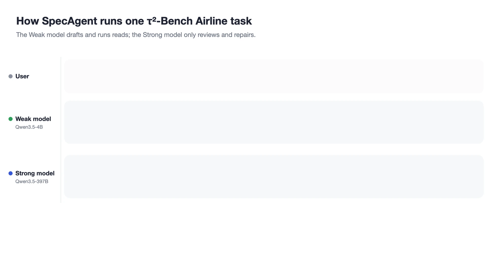
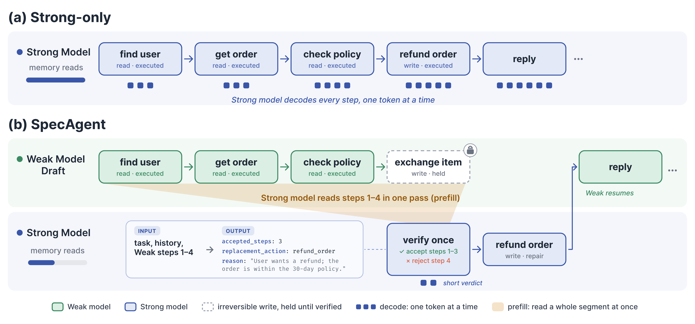
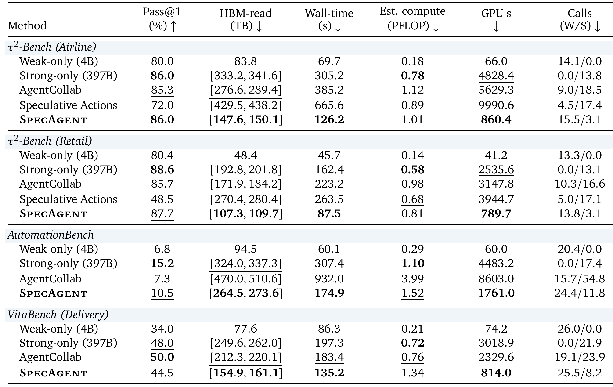
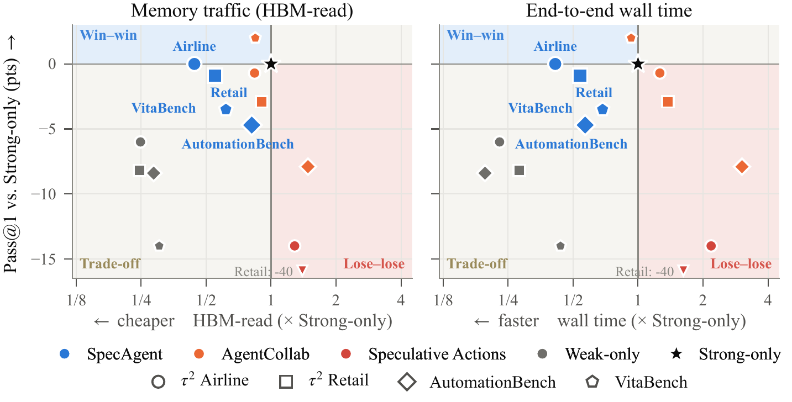
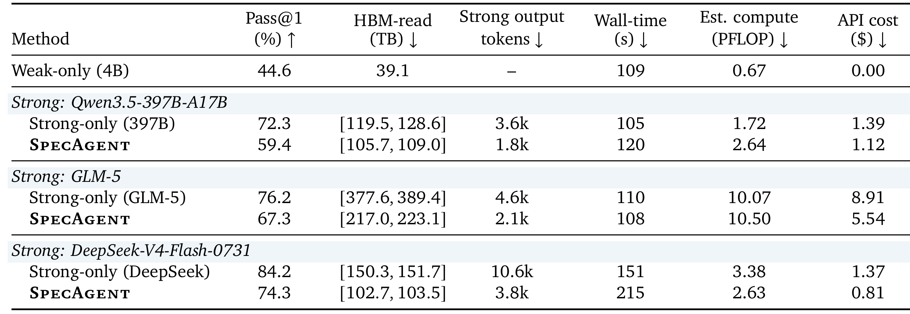
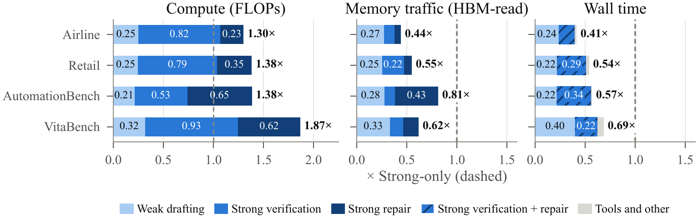

Draft with real reads
Drafts up to K steps. Read-only tool calls run immediately, so each step builds on real observations. The first state-changing action is held, not executed.
Weak–strong collaboration for tool-using agents
1LARK, HKUST (GZ) · 2Yinwang · 3University of Cambridge · 4HKUST
†Corresponding authors · ‡Project leader
A strong model need not write every step of an agent.
It can review them.

01 / The cost
Tool-using agents now solve tasks through long sequences of tool calls and user turns: about 20–30 turns on real MCP servers, 30–80 in customer service, and up to a hundred in everyday life services. The prevailing design has one strong model generate every step, so serving cost grows with the length of the trajectory and is dominated by the strong model's token-by-token decoding, which rereads its weights for every token it writes.
Yet many steps are routine: looking up an order, reading a record, searching again. Existing ways of sharing the work keep the strong model as the generator. Routers and collaborative agents decide, step by step, which model acts. Speculative agents keep a small model's draft only when it matches the strong model's own action, so the strong model still produces every reference step.
Checking a step is cheaper than writing it, especially when the check reads many steps at once.
02 / The protocol
SpecAgent separates acting from committing. A small Weak model drafts the trajectory; a large Strong model decides how much of it to keep.
Drafts up to K steps. Read-only tool calls run immediately, so each step builds on real observations. The first state-changing action is held, not executed.
Reads the drafted segment once and commits the longest prefix it judges semantically valid, with a reason for the first rejected step and optionally a replacement call.
A valid replacement runs directly; otherwise the Strong model writes one repair turn. The repair commits without a second review, and the Weak model resumes.

Three properties of agents shape the design
03 / The evidence
We pair Qwen3.5-4B as the Weak model with Qwen3.5-397B-A17B as the Strong model, both served on H20 GPUs, and evaluate on τ²-Bench, AutomationBench, and VitaBench. Resources count both models.

On AutomationBench and VitaBench, where the Weak model is further behind, SpecAgent recovers 44% and 75% of the Weak–Strong gap. It is the only collaborative method whose memory traffic and wall time are both below Strong-only on every benchmark. On VitaBench, AgentCollab reaches higher quality (50.0 vs. 44.5) but uses 1.4× the memory traffic and wall time of SpecAgent.
Estimated FLOPs rise by 30–87%: the saving is in memory traffic and time, not arithmetic.

On 101 MCP-Atlas tasks with real tool servers, the Weak model runs on one local RTX 5090 and the Strong model is called through its provider's API. Across three cloud Strong models, SpecAgent closes 53–75% of the Weak–Strong gap while the Strong model decodes 36–50% of its Strong-only output tokens, and API cost falls to 59–81%. Wall time does not fall here: the local Weak model takes about as long per task as the hosted Strong models.

04 / Where the saving comes from
Decoding is bound by memory bandwidth, while a verification prefill over a whole chunk is bound by compute. Strong verification and repair carry 81–85% of SpecAgent's compute but a much smaller share of its memory traffic (39–66%); Weak drafting, itself memory-bound decoding, accounts for only 15–19% of compute but 34–61% of memory traffic. Counting the Strong model's verdict and repair tokens predicts its share of memory traffic to within 0.01 on all four benchmarks.

Semantic acceptance. On τ²-Bench Retail, a verifier that accepts only the exact step the Strong model would take lowers Pass@1 to 82.5 and raises FLOPs by 70%, because valid Weak steps are rejected and regenerated.
Reviewing only where it matters. Also holding replies to the user, or reviewing every chunk including reads, more than triples the Strong calls and pushes wall time past Strong-only.
When it pays off. The trade favors memory-bandwidth-bound serving: while the Strong replica's decode batch stays below the compute–bandwidth balance point, about 37 sequences on H20, moving tokens from decoding to prefill saves time. The gain grows with how much Weak progress the Strong model accepts.
Reviewing grounded drafts retains most of a strong model's quality
while cutting both latency and memory traffic.
Citation
@article{wang2026specagent,
title = {Trajectory-Level Speculation with Semantic Verification for Tool-Using Agents},
author = {Wang, Zilin and Liu, Yinhong and Chen, Chao and Liu, Qun and Guo, Zhijiang},
journal = {arXiv preprint},
year = {2026}
}